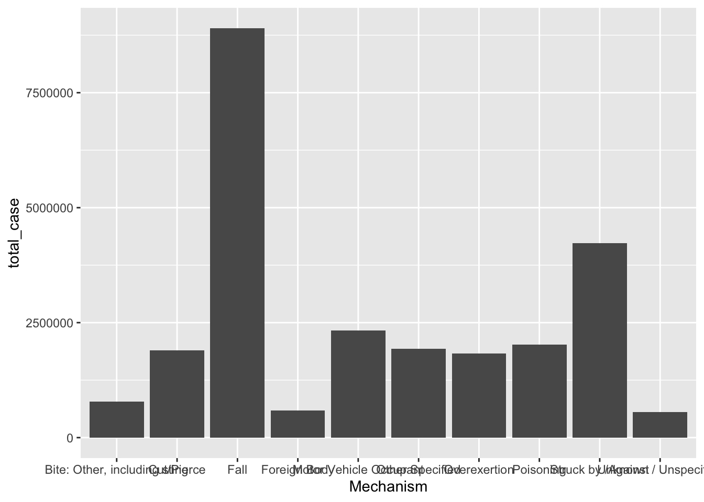

library(readr)
library(tidyverse)
library(dplyr)
library(forcats)Example Analysis
Economic and Health Burden of Non-Fatal Injuries
This analysis uses data from the CDC Web-based Injury Statistics Query and Reporting System (WISQARS) [reference] on the number of cases and economic costs associated with various mechanisms of non-fatal injuries in 2023. The audience for this analysis are students, researchers, and those who are interested in understanding the magnitude of the economic and health burden of non-fatal injuries in the United States. The WISQARS dashboard and data repository combines data collected from the National Center for Health Statistics, U.S. Census Bureau, and National Electronic Injury Surveillance System.
NoteOriginal data sources are linked here:
Data Dictionaries
| Variable | Description | Coding |
|---|---|---|
| Sex | 12 | M = Male |
| 123 | 123 | 123 |
| 1 | 1 | 1 |
Note
– indicates suppressed value (based on <20 unweighted count, <1,200 weighted count, or coefficient of variation of the estimate >30%);
Questions of interest
- Which mechanisms of non-fatal injury were the most common in 2023?
- How does the mechanism of non-fatal injury differ by gender in 2023?
Setting up R Environment
Loading packages
Loading data
costs <- read_csv("cost-data-export.csv")
cases <- read_csv("reports-data-export.csv")Data Wrangling
Before starting data analysis and data visualization, data wrangling is required to ensure that the datasets are in the desired format for better readability and analysis. This includes converting variables into the appropriate type (e.g, factor, numeric, string), merging, and removing rows/columns.
Using the glimpse function allows us to see the structure of the dataset, and the formats for each of the variables. In both datasets below, all the variables are in the format ‘chr’ (characters).
glimpse(cases)Rows: 87
Columns: 11
$ Sex <chr> "Males", "Males", "Males", "Males", "Males", "Male…
$ Mechanism <chr> "Bite: Dog", "Bite: Other, including sting", "Cut/…
$ `Estimated Number` <chr> "205,938", "396,562", "1,185,770", "5,267", "4,116…
$ Population <chr> "165,749,400", "165,749,400", "165,749,400", "165,…
$ `Crude Rate` <chr> "124.25", "239.25", "715.40", "3.18", "2,483.76", …
$ `Age-Adjusted Rate` <chr> "128.85", "246.51", "726.82", "3.52", "2,442.10", …
$ `Cases (Sample)` <chr> "5,370", "9,809", "28,654", "169", "108,567", "5,3…
$ `Standard Error` <chr> "12,415", "39,822", "71,234", "1,345", "329,026", …
$ CV <chr> "6.0%", "10.0%", "6.0%", "25.5%", "8.0%", "8.1%", …
$ `Lower 95% CI` <chr> "181,604", "318,510", "1.05 M", "2,631", "3.47 M",…
$ `Upper 95% CI` <chr> "230,272", "474,614", "1.33 M", "7,903", "4.76 M",…glimpse(costs)Rows: 85
Columns: 11
$ Mechanism <chr> "Bite: Dog", "Bite: Dog", "Bite: …
$ Sex <chr> "Males", "Females", "Unknown", "M…
$ `ED Visits` <chr> "188,674", "186,200", NA, "357,45…
$ `Medical Costs Total` <chr> "$618.53 M", "$610.42 M", NA, "$1…
$ `Medical Costs Average` <chr> "$3,278", "$3,278", NA, "$3,278",…
$ `Work Loss Costs Total` <chr> "$43.74 M", "$43.17 M", NA, "$82.…
$ `Work Loss Costs Average` <chr> "$232", "$232", NA, "$232", "$232…
$ `Quality of Life Loss Costs Total` <chr> "$1.05 B", "$1.09 B", NA, "$3.73 …
$ `Quality of Life Loss Costs Average` <chr> "$5,588", "$5,876", NA, "$10,441"…
$ `Combined Costs Total` <chr> "$1.72 B", "$1.75 B", NA, "$4.99 …
$ `Combined Costs Average` <chr> "$9,099", "$9,386", NA, "$13,952"…Cleaning Cases Data
#converting categorical variables to factors, continuous rates to numeric variables, and removing columns that will not be used in the analysis, removing rows that are comment lines
clean_cases <- cases %>%
slice(-c(66:86)) %>%
mutate(
Sex = as.factor(Sex),
Mechanism = as.factor(Mechanism),
across(
c(`Estimated Number`, Population, `Crude Rate`, `Age-Adjusted Rate`),
~ as.numeric(str_remove_all(.x, ","))
)
) %>%
select(
-c(`Cases (Sample)`, `Standard Error`, CV, `Lower 95% CI`, `Upper 95% CI`)
)Warning: There were 4 warnings in `mutate()`.
The first warning was:
ℹ In argument: `across(...)`.
Caused by warning:
! NAs introduced by coercion
ℹ Run `dplyr::last_dplyr_warnings()` to see the 3 remaining warnings.Cleaning Costs Data
#
clean_costs <- costs %>%
slice(-c(65:85)) %>%
mutate(
Sex = as.factor(Sex),
Mechanism = as.factor(Mechanism),
across(
c(
`ED Visits`,
`Medical Costs Average`,
`Work Loss Costs Average`,
`Quality of Life Loss Costs Average`,
`Combined Costs Average`
),
~ as.numeric(str_remove_all(.x, "[$,]"))
)
) %>%
mutate(
across(
c(
`Medical Costs Total`,
`Work Loss Costs Total`,
`Quality of Life Loss Costs Total`,
`Combined Costs Total`
),
~ case_when(
str_detect(.x, "B") ~ as.numeric(str_remove_all(.x, "[^0-9.]")) * 1000,
str_detect(.x, "M") ~ as.numeric(str_remove_all(.x, "[^0-9.]"))
)
)
)Warning: There was 1 warning in `mutate()`.
ℹ In argument: `across(...)`.
Caused by warning:
! NAs introduced by coercionMerging datasets
case_costs <- inner_join(clean_cases, clean_costs, by = c("Mechanism", "Sex"))Data Analysis
Question 1: Which mechanisms of non-fatal injury were the most common in 2023?
case_costs <- case_costs %>%
arrange(Mechanism)
case_costs %>%
group_by(Mechanism) %>%
summarize(total_case = sum(`Estimated Number`, na.rm = TRUE)) %>%
arrange(desc(total_case)) %>%
slice(1:10) %>%
ggplot(mapping = aes(x = Mechanism, y = total_case)) +
geom_col()
Question 2: How does the mechanism of non-fatal injury differ by gender in 2023?